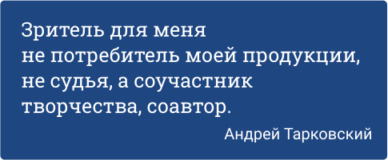

онлайн-курс
онлайн-курс
 18 часов
18 часов
 8 сентября
8 сентября
Как смотреть кино
За 8 занятий станем активными зрителямии разберёмся в кинопроцессе

онлайн-курс
18 часов
8 сентября
Порой фильмы устроены сложнее четырёхтомных романов. Но читать книги учат со школы, а смотреть кино — нет. При этом без подготовки бывает трудно получить от просмотра удовольствие. На курсе из 8 занятий научимся быть осознанными зрителями. Познакомимся с этапами кинопроизводства и узнаем, как смотреть кино глазами сценариста, режиссёра и монтажёра. Разберёмся в особенностях жанров и рассмотрим важнейшие картины, от «Гражданина Кейна» до «Матрицы».
Для погружения в кинематограф
Длительность каждого занятия
Длительность курса
Занятия проходят онлайн в режиме вебинаров с преподавателем
Если вы не успели на вебинар, всегда можете посмотреть запись в личном кабинете
Вы можете задать вопрос преподавателю на занятии
Кто чем занят в съёмочной группе; На какие этапы делится кинопроизводство; Как выглядит сценарий фильма и как он меняется по ходу съёмок; Какими методами режиссёры заставляют нас смеяться, плакать и грустить; Как построение кадра, музыка и свет помогают считывать заложенные в фильм смыслы; Какие жанры есть в кино и как от них зависит работа операторов, осветителей и монтажёров; Как, зная всё это, понимать, о чем фильм.
8 сентября 20:00
Данила Кузнецов
10 сентября 20:00
Данила Кузнецов
13 сентября 13:00
Данила Кузнецов
15 сентября 20:00
Данила Кузнецов
17 сентября 20:00
Данила Кузнецов
20 сентября 13:00
Данила Кузнецов
21 сентября 19:00
Дмитрий Скворцов
22 сентября 19:00
Дмитрий Скворцов